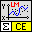

Owning Palette: CE Math
Curve fitting VIs
| Palette Object | Description | |
|---|---|---|
 |
[ce] Levenberg Marquardt.vi | Uses the Levenberg-Marquardt algorithm to determine the least squares set of coefficients that best fit the set of input data points (X, Y) as expressed by a nonlinear function y = f(x, a) where a is the set of coefficients. |